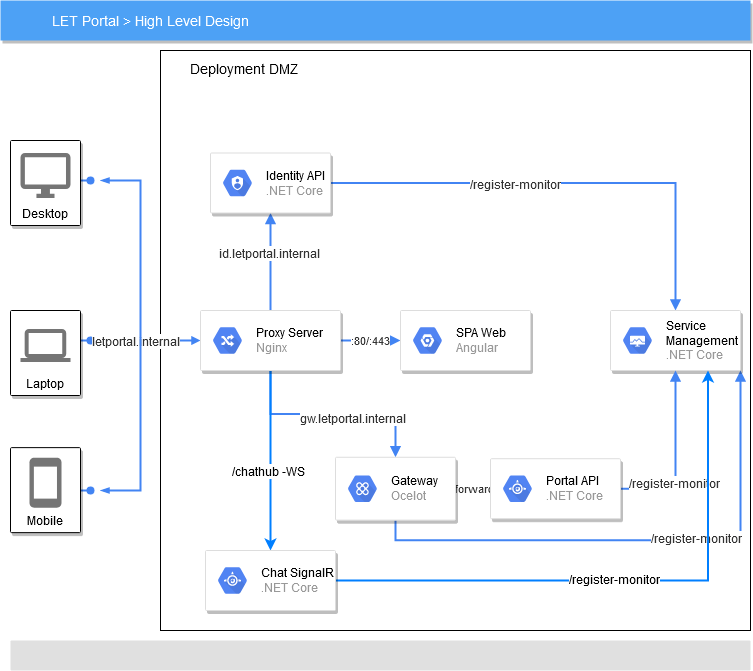

One VM
The documentation applies to: v0.8.0
v0.8.0
Deployment Model¶

Now look back to LET Portal Architecture, we need to discuss more details before you can choose this Deployment Model.
Technically, all components which stay inside DMZ should be deployed on one VM. So you need to install some softwares below:
- Nginx
- .NET Core SDK (prefer to build and run)
- MongoDB
- Any database which stores Portal and Identity Database
Also we prefer to a directory structure of letportal-pub folder below:
spa-web: Copy all files ofdist\web-portalfolder which you published by Angular CLIweb-apis:LetPortal.IdentityApis: publish Identity APIs into this folderLetPortal.PortalApis: publish Portal APIs into this folderLetPortal.ServiceManagementApis: publish Service Management APIs into this folderLetPortal.GatewayApis: publish Gateway APIs into this folder
Grant permissions
On Linux, you need to grant permission on these folders with command sudo chmod -R 755 ~/.letportal-pub.
Configuration changes¶
SPA Web¶
Publish command: npm run prod
Location: src\web-portal\src\environments\environment.prod.ts
Changes:
export const environment = {
production: true,
version: "0.0.5",
configurationEndpoint: "http://{Your_public_domain}:8080/v1.0/api/configurations/Portal/v1.0",
ignoreSendTokenEndpoints: "api/accounts/login;api/accounts/refresh;api/accounts/forgot-password;api/accounts/recovery-password"
};
Portal Configuration file¶
Location: src\web-apis\LetPortal.ServiceManagementApis\Files\Portal\v1.0\appsettings.Local.json
Changes:
{
"portalBaseEndpoint": "http://{Your public domain}:8080/v1.0",
"identityBaseEndpoint": "http://{Your public domain}:8081"
}
Portal APIs Configuration file¶
Location: src\web-apis\LetPortal.WebApis\appsettings.Local.json
Changes:
{
"FileOptions": {
"DownloadableHost": "http://{Your_public_domain}:8080/v1.0/files
}
}
Gateway¶
Location: src\web-apis\LetPortal.Gateway\appsettings.Local.json
Changes:
{
"GlobalConfiguration": {
"BaseUrl": "http://{Your_public_domain}:8080/"
}
}
Publish SPA Web¶
You need to read this for more details. For brief, just use these commands below
Configuration Url
You need to edit configurationEndpoint in environment.prodlocal.ts file. For example: if you have a plan to public this website with letportal.abc.com domain, you need to change it into this domain.
``` powershell tab="Window" cd src\web-portal
npm install
npm run prodlocal
Copy-Item -Path .\dist\web-portal* -Destination D:.letportal-pub\spa-web -Recurse
``` bash tab="Linux"
cd src/web-portal
npm install
npm run prod
sudo cp dist/web-portal/* ~/.letportal-pub/spa-web/ -r
Publish all services¶
You need to read this for more details. For brief, just use these commands below
``` powershell tab="Window" cd src\web-apis
.\publish-win.ps1 -publishFolder "D:.letportal-pub\web-apis"
.\run-win.ps1 -publishFolder "D:.letportal-pub\web-apis" -environment "Local"
``` bash tab="Linux"
cd src/web-apis
sudo ./publish-lnx.sh
sudo ./run-lnx.sh
Configure Nginx¶
Now if you ensure four services are running well, you continue to set up Nginx for allowing external clients to access.
Nginx must listen on these ports to act as proxy forward a request to correct service.
- Identity APIs: 8081 - 51620 (Nginx listens on 8081 then forward to local port 51620 which Identity APIs listens)
- Gateway APIs: 8080 - 53595
- SPA Web: 80
Install Nginx
I recommend you to do step by step in this guide. On Windows, you just install as usual.
If you don't have an experience on Nginx, so you just copy and replace this nginx.conf file on \etc\nginx folder on Linux or {your_installed_path}/nginx on Windows
``` Nginx tab="Basic nginx.conf" user www-data; worker_processes auto; pid /run/nginx.pid; include /etc/nginx/modules-enabled/*.conf;
events { worker_connections 768; # multi_accept on; }
http {
##
# Basic Settings
##
sendfile on;
tcp_nopush on;
tcp_nodelay on;
keepalive_timeout 65;
types_hash_max_size 2048;
# server_tokens off;
server_names_hash_bucket_size 64;
# server_name_in_redirect off;
include /etc/nginx/mime.types;
default_type application/octet-stream;
##
# SSL Settings
##
ssl_protocols TLSv1 TLSv1.1 TLSv1.2; # Dropping SSLv3, ref: POODLE
ssl_prefer_server_ciphers on;
##
# Logging Settings
##
#access_log /var/log/nginx/access.log;
#error_log /var/log/nginx/error.log;
##
# Gzip Settings
##
gzip on;
# gzip_vary on;
# gzip_proxied any;
# gzip_comp_level 6;
# gzip_buffers 16 8k;
# gzip_http_version 1.1;
# gzip_types text/plain text/css application/json application/javascript text/xml application/xml application/xml+rss text/javascript;
##
# Virtual Host Configs
##
include /etc/nginx/conf.d/*.conf;
include /etc/nginx/sites-enabled/*;
server {
listen 8080;
server_name _;
access_log /etc/nginx/logs/api.access.log;
error_log /etc/nginx/logs/api.error.log;
location / {
proxy_pass http://localhost:53595;
#proxy_http_version 1.1;
#proxy_set_header Upgrade $http_upgrade;
#proxy_set_header Connection keep-alive;
#proxy_set_header Host $host;
#proxy_cache_bypass $http_upgrade;
#proxy_set_header X-Forwarded-For $proxy_add_x_forwarded_for;
#proxy_set_header X-Forwarded-Proto $scheme;
}
}
server {
listen 8081;
server_name _;
#access_log /etc/nginx/logs/ids.access.log;
#error_log /etc/nginx/logs/ids.error.log;
location / {
proxy_pass http://localhost:51620;
#proxy_http_version 1.1;
#proxy_set_header Upgrade $http_upgrade;
#proxy_set_header Connection keep-alive;
#proxy_set_header Host $host;
#proxy_cache_bypass $http_upgrade;
#proxy_set_header X-Forwarded-For $proxy_add_x_forwarded_for;
#proxy_set_header X-Forwarded-Proto $scheme;
}
}
}
## Configure SPA Web
Nginx must create `spa-web.conf` file on `nginx\sites-available` with the content below:
``` nginx
server {
listen 80;
listen [::]:80;
root $HOME/.letportal-pub/spa-web;
index index.html index.htm;
server_name letportal.internal;
location / {
try_files $uri $uri/ /index.html;
}
}
You need to check a folder path on root section which matches your SPA web's deployment folder.
server_name must be a public domain or local DNS name in intranet.
After you created this file successfully, you need to create a link from it to sites-enabled by command
``` powershell tab="Windows" Copy-Item -Path .\sites-available\spa-web.conf -Destination .\sites-enabled\
``` bash tab="Linux"
sudo ln -s /etc/nginx/sites-available/spa-web.conf /etc/nginx/sites-enabled/
Configurate Services on Startup¶
Nginx only helps you to forward a request to correct server. So it can't monitor a DotNET processes and wake them up when a server restarts. Thus you need to create a Window Service or Linux Service to wake them up.
Linux Service¶
Edit a run-lnx.sh to adjust default absolute path on $publishFolder parameter
#!/bin/bash
publishFolder=${1:-/home/demolnx/.letportal-pub/web-apis}
environment=${2:-Local}
Create a service definition file:
sudo nano /etc/systemd/system/letportal-apis.service
Copy this content in this file
[Unit]
Description=Run all LET Portal services
[Service]
# Ensure installed MongoDB and some databases wake up
ExecStartPre=/bin/sleep 30
ExecStart=/home/demolnx/letportal.app/src/web-apis/run-lnx.sh
ExecStop=/home/demolnx/letportal.app/src/web-apis/shutdown-lnx.sh
TimeoutStartSec=120
Type=oneshot
RemainAfterExit=yes
KillSignal=SIGINT
SyslogIdentifier=letportal-apis
[Install]
WantedBy=multi-user.target
Script path
Because this service will run under root so you need to adjust your path in ExecStart and ExecStop
Then you execute this bash to enable a service
sudo systemctl enable letportal-apis.service
sudo systemctl start letportal-apis.service
sudo systemctl status letportal-apis.service
The result should be
letportal-apis.service - Run all LET Portal services
Loaded: loaded (/etc/systemd/system/letportal-apis.service; enabled; vendor preset: enabled)
Active: active (exited) since Fri 2020-03-06 14:31:35 +07; 5min ago
Process: 864 ExecStartPost=/bin/sleep 60 (code=exited, status=0/SUCCESS)
Process: 754 ExecStart=/home/demolnx/letportal.app/src/web-apis/run-lnx.sh (code=exited, status=0/SUCCESS)
Main PID: 754 (code=exited, status=0/SUCCESS)
Tasks: 31 (limit: 2245)
CGroup: /system.slice/letportal-apis.service
├─767 SCREEN -dmS letportal-sm
├─772 /bin/sh
├─780 SCREEN -dmS letportal-pt
├─782 /bin/sh
├─785 dotnet LetPortal.PortalApis.dll
├─787 SCREEN -dmS letportal-id
├─789 /bin/sh
├─794 SCREEN -dmS letportal-gw
└─796 /bin/sh
Windows Startup¶
You can read this post to learn how to trigger run-win.ps1 on Windows Startup